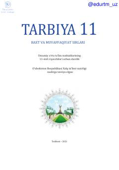

T111-sinf o'quvchilari uchun mo'ljallangan tarbiya fani darsligi.
Mazkur darslik umumiy o'rta ta'lim maktablarining 11-sinf o'quvchilari uchun mo'ljallangan bo'lib, yoshlarni mustaqil hayotga tayyorlash, milliy qadriyatlar, axloqiy me'yorlar va fuqarolik burchi haqida bilim beradi. Kitobda oilaviy qadriyatlar, vatanparvarlik, halollik va zamonaviy hayot ko'nikmalari yoritilgan.